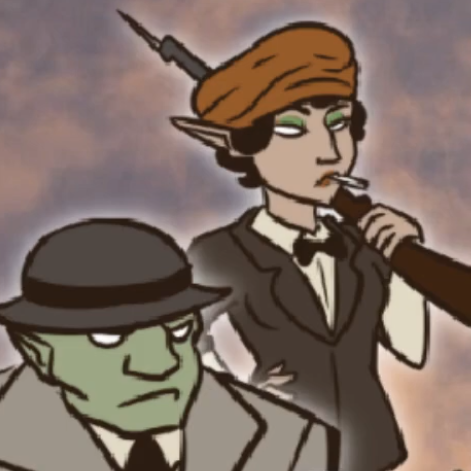
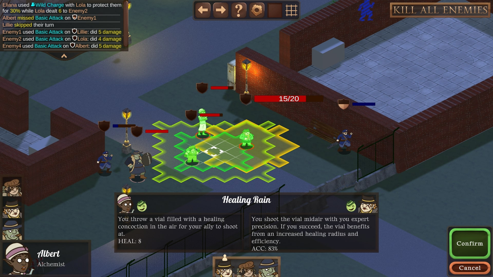
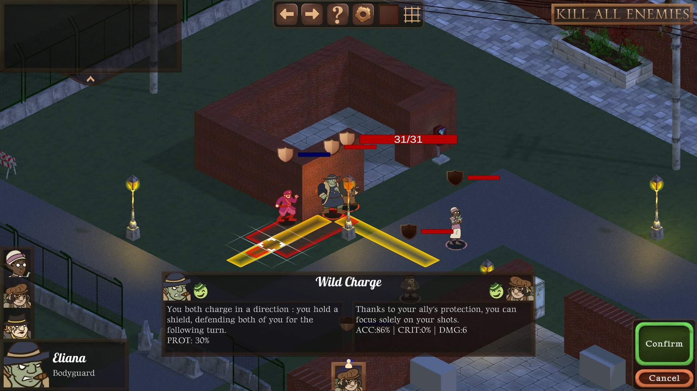
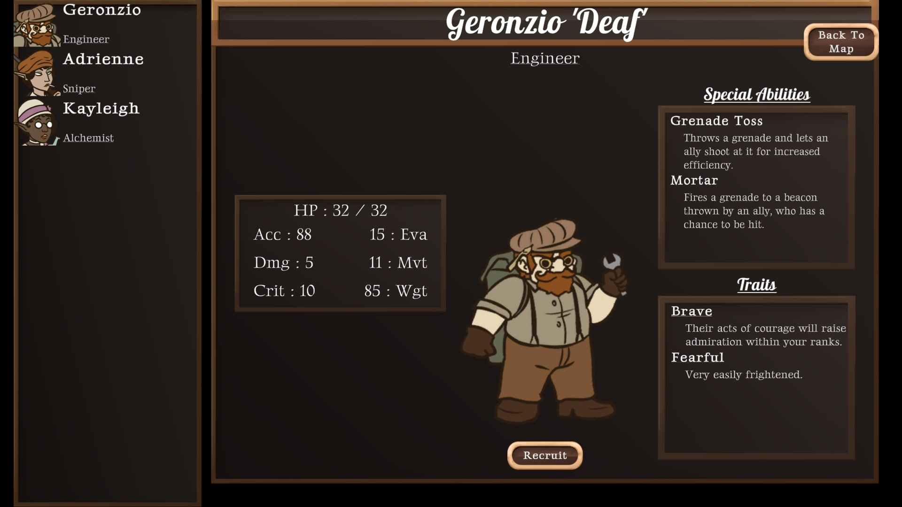
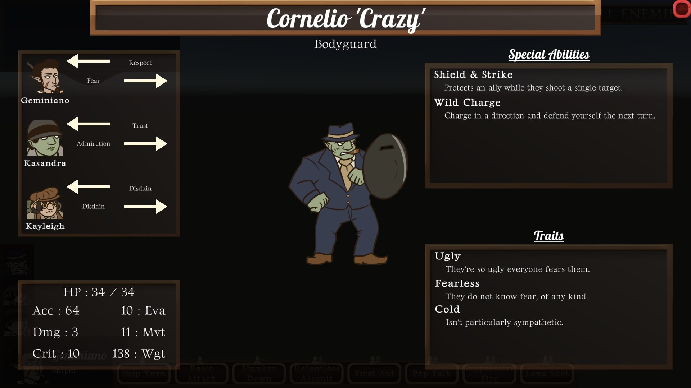
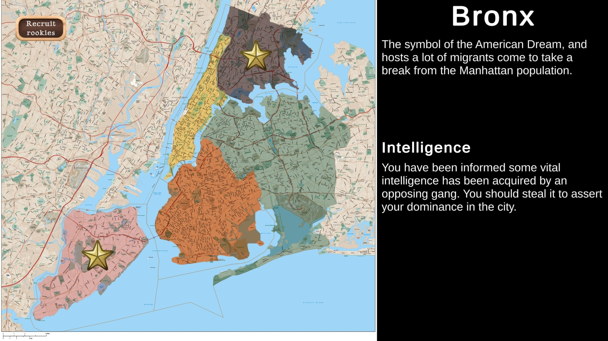
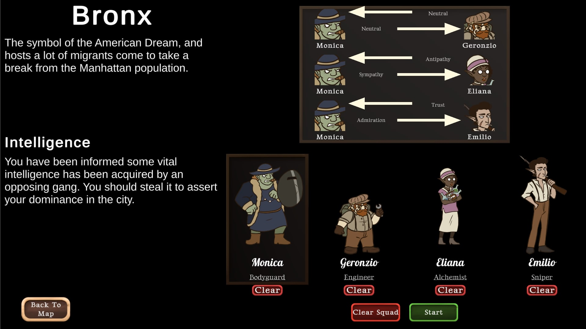

In a fantasy version of the 1920s New York, you are the godfather of a newborn mafia. You send teams of four henchorks, henchelves and henchdwarves do your illicit jobs in the city. But be wary, as you'll have to manage their difficult personalities and the relationships that link them : the events on the battlefield affect their relationships, and they will grow to trust or hate each other. Because your teams focus heavily on teamwork, they'll almost exclusively use abilities in duo, and the alchemy between the two will influence their efficiency.


SynCOM is a tactical, turn-based, tile-based game in top-down isometric view. Players mainly use "Duo Abilities" that perform differently depending on the relationship of the two units involved. Friends perform better together, but enemies might sabotage each other despite being on the same team.


SynCOM is my end of studies project. It was developed by a team of 5 persons using Unity. I worked on the game design and programming of the emotion system.

